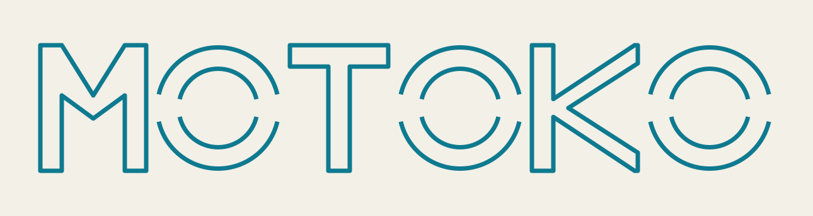

open source · AGPL-3.0-or-later · stdlib-only Python · fail-closed scope gate

Pentest automation,
on the record.
MOTOKO binds the scanners and agents you already trust into one governed graph. Scope is checked before anything runs; every action lands in an append-only record. It replaces nothing — no scanner, no agent runtime, no rewrite of the tools your team already runs.
pip install "git+https://github.com/eric-stone-plus/MOTOKO.git#subdirectory=engine"
- 40
- rule packs, statically checked
- 0
- runtime dependencies
- 23
- tools, rule-driven
- $0
- AGPL-3.0-or-later
The interface
A read-only glance at every engagement
One question per line: which engagements are live, what the wave is doing, which events just landed. The interface never invents a metric — an unknown count renders as an em-dash.
ENGAGEMENTS
ENGAGEMENT example ─ live ● ─ runner alive ─ heartbeat 4s old
RUN PROGRESS
● live example hb 4s runner alive
wave 2/4 ░░░░░░░░░░░░░░░░ 50% ~12m eta
tools 3/7 findings +2 cd 1 429:1
ACTIVITY FEED
09:31:02tool_run.transitionsubfinder -d example.invalid -silent
09:31:08opsec_cooldown_skiporigin cooling down; rule deferred
09:31:11observation.processed14 obs · dedup_pass 12 · dedup_hit 2
09:31:12verification_blockedmissing_backend · egress_policy
stranded hypotheses 0 · broken links 0 · parked findings 2
Tool calls
Every tool call is rendered, gated, parsed, event-sourced
Rule packs name bare binaries and argv templates. Nothing reaches a tool that the engagement cannot render or that the scope gate refuses; the OPSEC board cools origins down, except for the WAF-detection rule.
Try the gate
demo scope: example.invalid · 203.0.113.0/24
Label-boundary matching and CIDR checks, in the browser. The engine applies the same arithmetic in engine/core/scope.py — this demo sends no traffic and performs no resolution.
scope: signed · halt: none
refused before it runs evil-example.invalid
reason: no in-scope domain match · refusal recorded as a first-class eventIllustrative — client-side arithmetic mirrors the engine's label-boundary and CIDR rules. Subdomains of the scope match; suffix tricks like evil-example.invalid do not. The demo scope is documentation-reserved (example.invalid, RFC 2606; 203.0.113.0/24, RFC 5737).
$ motoko run example --max-cycles 20 --wave-cycles 5 --max-waves 4
beats: SYNC → VALIDATE → EXPAND → PRIORITIZE → ACT → REFLECT
R-RECON-SUB-001 when: url matches ^https?:// · domain_subdomains_enumerated eq false
render subfinder -d example.invalid -silent placeholders 1/1
ACT scope ok · cooldown ok · argv rendered
parse 14 observations · dedup_pass 12 · dedup_hit 2
$ motoko health example
stranded hypotheses 0 · broken links 0 · parked findings 2
parked reasons: missing_backend · egress_policy
Research
Borrowed from CISA, NIST, DARPA and allied programs
RESEARCH.md surveys how military-grade programs are actually graded — assurance, provenance, adjudication — across 20 absorbable patterns (12 US, 8 allied). MOTOKO claims no such grade; it adopts only patterns that need nothing beyond the Python stdlib.
US programs
- CISA · ScubaGear
- The unified verdict record — every check names its tool call, its normative strength, and declares what it cannot evaluate instead of dropping it
- NIST · OSCAL + SP 800-115
- Assessment results as a standard artifact; authorization as a data structure (ROE-as-data, authorized hours and source locations included)
- DARPA · CGC + AIxCC
- Put the gates on the API, not around the agent — it posts artifacts, never reaches the target; and never trust an agent's self-report: rescore from the event log
- NSA · nsacyber
- Every prose discipline ships with a machine-checkable detector; guidance and runnable detectors live in one repository
- US Navy NAVSEA · STIG Manager
- Content hash as rule identity — conclusions auto-inherit when the check content is unchanged
- DoD Platform One · Big Bang
- A doctor is a validity predicate, not a WARN list: name the minimal core set, missing one class means unhealthy
- MITRE + Red Canary · Caldera, ART
- Corpus discipline: typed inputs with defaults, prerequisite checks, cleanup commands
Allied programs
- Canada CSE · AssemblyLine
- A heuristic must be declared in the manifest before it can fire; the server recomputes scores and rejects unknown heuristics
- France ANSSI · DFIR ORC
- Two machine-readable run records: the Outline (execution context) and the Outcome (per-action results) — hash both the engine and every tool
- Belgium · MISP
- A closed vocabulary is one JSON file per term, schema-validated — adding a term is a data-only change
- Australia ASD/ACSC · ISM as OSCAL
- Profile over catalog: which subset applies at this assurance level is a data file, not hardcoded checks
- UK NCSC
- Guidance as machine-readable policy packs, sharded by threat model; parser contracts induced from a corpus
- Filigran OpenCTI · TheHive Cortex
- External legs on a contract: a closed connector type enum with scope registration, and self-describing parser manifests
Trust
What the engine enforces, and what it leaves to the operator
Each row names who enforces it — the engine or the operator. The contract (GRAPH.md) is larger than the engine; IMPLEMENTATION.md marks what is implemented and what is not.
Where enforcement lives
- Scope
- Engine-side, fail-closed; refusals are first-class events
- Interrupt
- Operator-side. The destructive-edge circuit breaker is specified in the contract and enforced by the operator shell. The engine does not implement it yet.
- Evidence
- Engine-side: append-only events, SHA256 manifests,
seal/--verify. Evidence storage is not encrypted. - Seat
- The operator is not a node; the seat plugin is a thin control plane over the
motokoCLI
Also operator-side today: bounded parallel fan-out and host-resource budgeting. motoko loop audits engineering changes (ROLLBACK/STOP verdicts) — separate from scan waves.
Finding states are explicit
-
Promotion is earned by hard evidence — a DOM confirmation or an out-of-band callback. Only validator events promote past
triaged; a replay re-check caps out atreproduced. -
Replay-observed; not yet the hard evidence a promotion needs.
-
A harness limitation blocks verification with a reason code instead of burning retries or terminating it — a flag beside the state, never a state change.
-
Refused before it ran; recorded as a first-class event.
-
Queued work: the dedup key admitted it and the noise gate ran; only validator events can promote it from here.
-
Closed without promotion; duplicates link through
duplicate_ofedges.
No scan finding is stamped verified_true — scan evidence tops out at verified. The motoko loop verify beat stamps it only on engineering-change findings, budget-capped. The full contract-versus-engine matrix lives in IMPLEMENTATION.md →
Getting started
From install to evidence in four steps
stdlib-only Python 3.11+, zero runtime dependencies. The first checks are read-only.
-
01
Install the engine. One package, zero runtime dependencies — the
motokoCLI comes with it.pip install "git+https://github.com/eric-stone-plus/MOTOKO.git#subdirectory=engine" -
02
Check the environment. Read-only — a passing doctor is not authorization to scan. Its WARN lines name the unresolved binaries for your own agent to fetch — upstreams and licenses in
INSTRUMENTS.md.motoko doctor -
03
Check the corpus. 40 rule packs, statically checked — no traffic, no LLM.
motoko rules --report -
04
Initialize, run, digest. Replace the reserved example inputs with the approved scope. Set
MOTOKO_HOMEand declare an egress posture first (MOTOKO_EGRESS_MODE=directfor a lab run) — the posture is refused, not guessed;initrefuses a home default that an upgrade would wipe. Bring your scanner binaries: a missing one records a degradation, never a fake success. An exit code of zero does not mean every scanner succeeded.motoko init example --scope example.invalid --seed https://example.invalid/motoko run example --max-cycles 20 --wave-cycles 5 --max-waves 4motoko digest example
Bring your tools and install the engine.
stdlib-only Python ≥ 3.11. The scanners and agents you already trust run under scope checks, OPSEC cooldowns, and an audit trail, in one install. The scan engine never downloads a scanner — your own agent brings the tools, from the upstreams you authorise. The scope gate is engine-side and fail-closed; the human interrupt is enforced by the operator shell.
The engine package installs as motoko and provides the console script of the same name. From a clone, or straight from the GitHub repository — the one place this project is hosted; re-run the same command to update after each push.
pip install ./engine
pip install "git+https://github.com/eric-stone-plus/MOTOKO.git#subdirectory=engine"
Optional read-only terminal interface (Textual), installed from a clone. motoko status and motoko watch stay stdlib.
pip install './engine[interface]'
Run without installing, straight from the source tree.
cd engine && python3 -m core --help